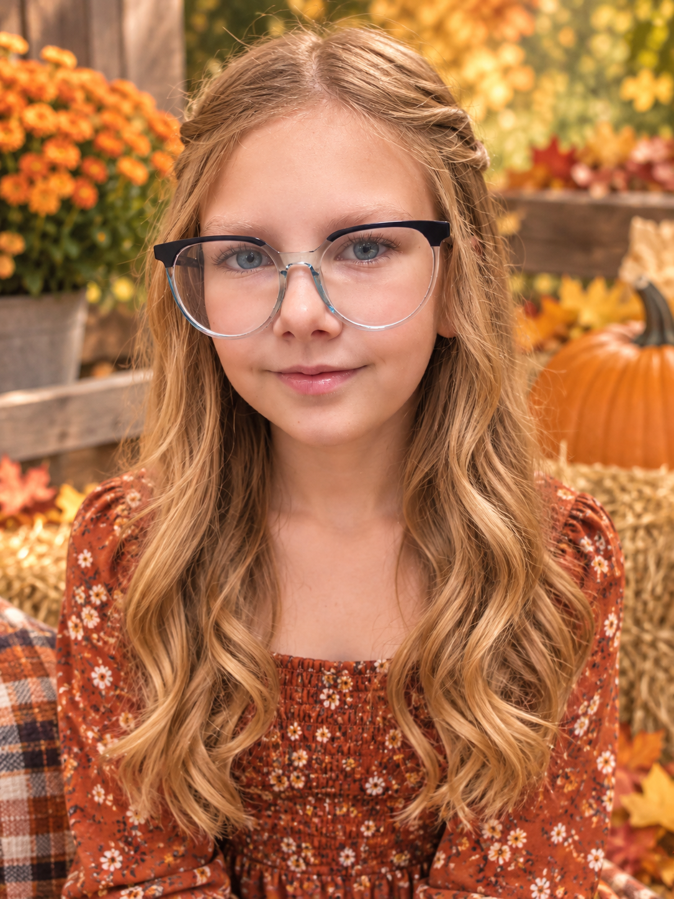
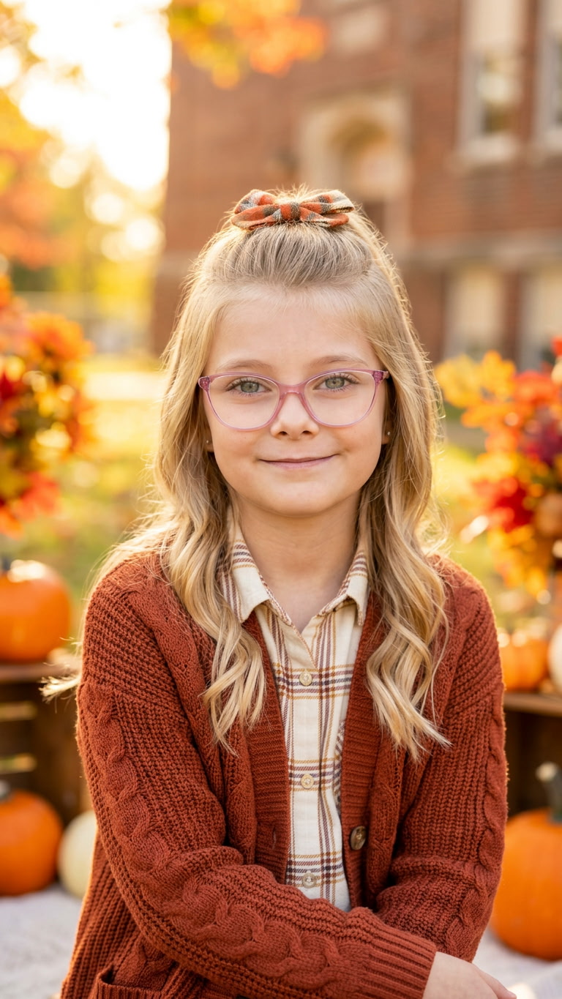
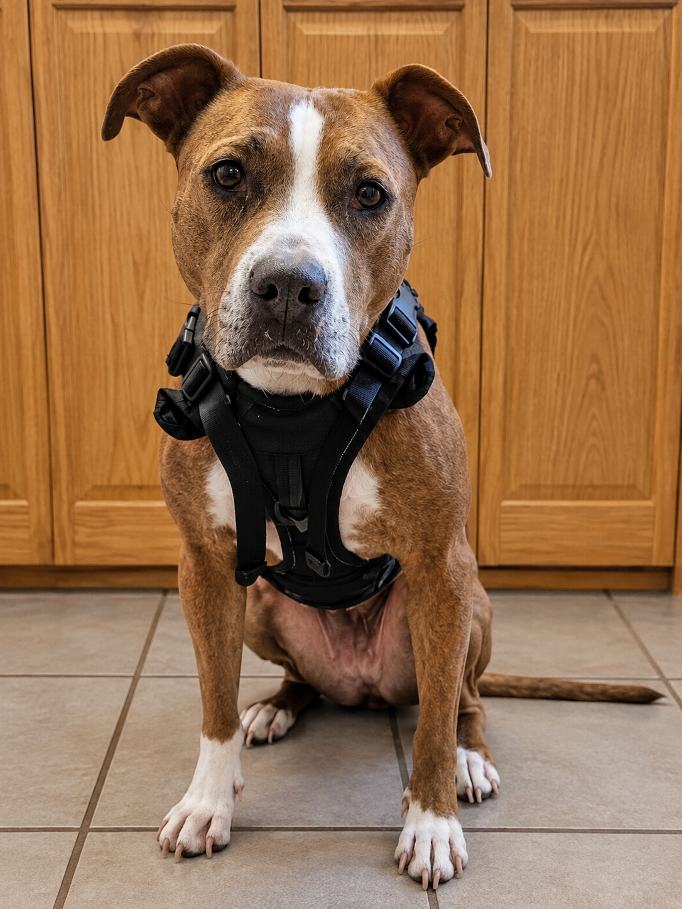

Meet the Family
Family is an important part of Natasha's life. The people closest to her have helped shape who she is, and her words offer a glimpse into the love, pride, and appreciation she has for each of them.
Brandon
Behind so much of who Natasha is stands her husband, Brandon, who has supported her through life's good times, difficulties, and changes. He never hesitates to lend a hand or do whatever he can for their family. His dedication to Natasha and their four children means more to her than words can express. She continues to be amazed by him and finds herself loving him more with each passing year. To Natasha, he is an incredible husband, a wonderful father, and an essential part of the life they have built together.
“Somehow, I love you more with every passing year, and you still never cease to amaze me.” -Natasha
Brayden
Brayden was Natasha's first baby, the child who made her a mother, and he is now 13. She is continually amazed by how quickly he has grown. Caring, funny, intelligent, and curious, he shares her passion for learning. He enjoys gaming and athletics, along with chess, which Natasha appreciates for the lessons it teaches about patience, planning ahead, and seeing the bigger picture. She is proud of the person he is becoming and looks forward to seeing where his interests and life take him. No matter how much he grows, he will always hold a special place in her heart.
“No matter how old you get, you will always be my first baby and the boy who first showed me what it means to love someone with your whole heart.” -Natasha

Adilyn
Adilyn, Natasha's second child, is already 10 and continues to amaze her with her curiosity and eagerness to learn. Always asking questions and discovering new things, she keeps Natasha interested in watching how her mind works. She is learning the violin and singing in chorus, and her willingness to try new things makes her mother proud. Adilyn is also a loving, compassionate big sister who looks after her younger siblings and makes sure they are okay. Natasha treasures her daughter's kind heart and looks forward to watching her grow into the talented, curious, and caring person she is becoming.
“Your compassion and big heart are some of the things I love most about you.” -Natasha

Evelyn
Evelyn, affectionately called “Evy,” is Natasha's third baby and is already 7. A spirited girl with a personality all her own, she loves learning and gaming. Natasha especially enjoys seeing her excitement when she shares something new she has discovered. Evelyn has a caring heart, even when her shy side shows, but she can also be hard on herself. Natasha wishes her daughter could see the strength, intelligence, and kindness that others see in her. She hopes Evelyn always holds on to her curiosity, spunky personality, and the warmth she brings to those around her.
“You have this way of walking into a room and lighting it up with your smile and kindness without even realizing you're doing it.” -Natasha
Lachlan
Lachlan is Natasha's fourth and final baby, and at just 3 years old, he has already brought enormous joy, laughter, love, and chaos into the family. Always on the go, he loves exploring, learning, and finding new things to discover. Natasha admires his willingness to try unfamiliar things even when he feels scared or uncomfortable, and she enjoys watching him become more confident and independent. He has a sweet side alongside a spirited personality of his own. Knowing he is her last baby makes Natasha cherish the cuddles, laughter, and everyday moments even more as she watches him grow.
“Being my last baby means I'm holding on a little tighter to these moments, knowing just how quickly these years pass.” -Natasha

Anita
Anita joined Natasha's family as a rescued dog after Brandon left the military. They initially hoped she could be trained as his service animal, but she soon became a companion to the entire family. Anita has been present through the arrival of the two youngest children and the everyday chaos of raising four kids. She greets the family with a wagging tail, follows commands, and keeps watch over their home. To Natasha, Anita represents the loyalty, comfort, and love that rescued animals can bring into a family's life. She is far more than a pet; she is a valued companion and protector.
“You may be our family pet, but your place in our family will always mean so much more than that.” -Natasha